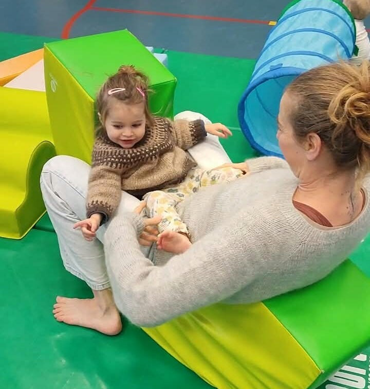
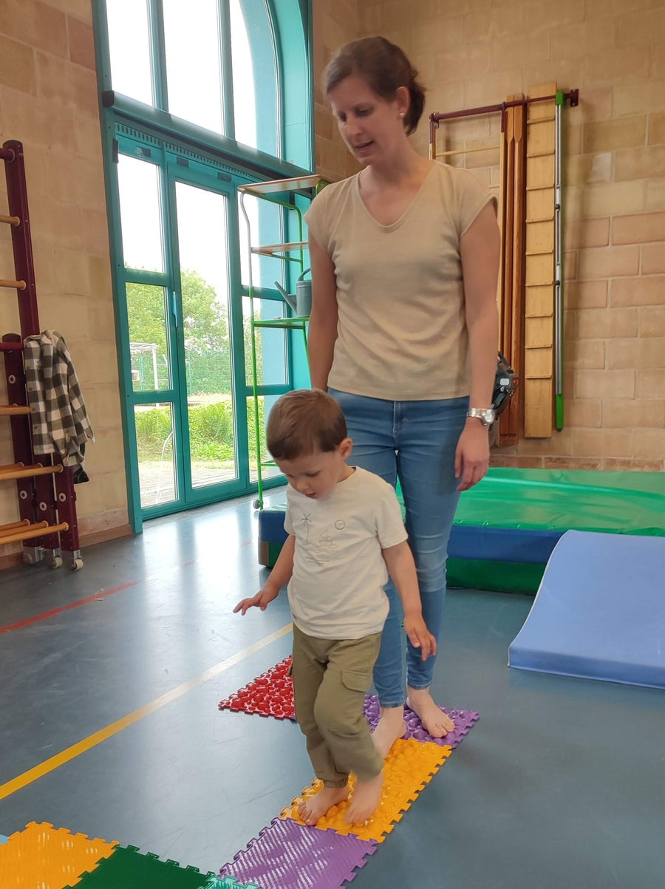

Het Wonderpad
Samen op ontdekking, bewegen en verwonderen
Voor ouders en kinderen van ongeveer 1 tot 3 jaar
“Op Het Wonderpad mag je kindje vrij ontdekken, terwijl jij dichtbij bent om mee te genieten van alles wat er onderweg ontstaat.”
Een warme, speelse ontdekkingstocht vol beweging en sensorische prikkels voor jou en je kindje van 1 tot 3 jaar.
Wil je je kindje de ruimte geven om volop te ontdekken, te bewegen en zich te verwonderen, terwijl jij dichtbij bent?
Tijdens Het Wonderpad krijgt je kindje de kans om op eigen tempo op ontdekking te gaan in een veilige en stimulerende omgeving.
We creëren een speelse beweegwereld waarin je kindje kan klimmen, klauteren, balanceren, voelen en experimenteren.
Verschillende bewegingsmogelijkheden en materialen nodigen uit om nieuwsgierig op onderzoek te gaan en te ontdekken wat het lichaam allemaal kan.
Er hoeft daarbij niets en er is geen juiste manier om het Wonderpad te beleven. Misschien gaat je kindje meteen enthousiast op ontdekking, terwijl het op een ander moment liever eerst rustig kijkt. Alles mag er zijn. Jij blijft dichtbij als vertrouwde basis, terwijl je kindje stap voor stap de wereld verder verkent.


Wat mag je verwachten?
Een zachte ontdekkingstocht voor jou en je kindje
Op dit bijzondere Wonderpad valt er heel wat te ontdekken.
Je kindje krijgt de kans om op een speelse manier nieuwe bewegingen en ervaringen op te doen, helemaal op het eigen tempo.
Tijdens de workshop ontdekken jullie onder andere:
🎈 verschillende mogelijkheden om te klimmen en te klauteren.
🎈 sensorisch materiaal om te voelen, te ervaren en met verschillende zintuigen te ontdekken.
🎈 een speels en uitdagend evenwichtspad.
🎈 verschillende bewegingsuitdagingen waarin je kindje kan experimenteren, proberen en opnieuw proberen.
🎈 en natuurlijk heel veel ruimte voor verwondering, nieuwsgierigheid en vrij spel.
Door zelf te bewegen en dingen uit te proberen, ontdekt je kindje steeds meer over het eigen lichaam en de eigen mogelijkheden. Misschien lukt iets niet meteen, maar juist door te proberen, te vallen, opnieuw te beginnen en uiteindelijk iets nieuws te ontdekken, kan het vertrouwen in zichzelf groeien.
Dichtbij en Verbonden
Jouw aanwezigheid is een belangrijk onderdeel van Het Wonderpad. Je kindje hoeft de wereld niet alleen te ontdekken. Jij bent dichtbij om te kijken, aan te moedigen, mee te spelen of gewoon samen te genieten van wat er gebeurt.
Soms gaat je kindje zelfstandig op pad terwijl jij rustig toekijkt. Op andere momenten gaan jullie samen op ontdekking. Misschien neem je even een handje vast bij een spannend stukje, kruip je mee door het parcours of ontdek je samen een nieuw materiaal.
Die combinatie van zelf kunnen exploreren en steeds kunnen terugvallen op een vertrouwde ouder geeft je kindje de veiligheid om nieuwe dingen uit te proberen. Samen ontdekken en spelen kan bovendien een mooie manier zijn om jullie band verder te versterken.
Misschien ontdek jij tijdens de workshop ook nieuwe kanten van je kindje. Wat maakt je kindje nieuwsgierig? Waar trekt het spontaan naartoe? Wat durft het al helemaal zelf en wanneer heeft het nog wat nabijheid of ondersteuning nodig?
Terwijl je kindje op ontdekking gaat, is er bovendien ruimte voor jou als ouder. Je ontmoet andere ouders, kunt ervaringen uitwisselen en krijgt de kans om even bewust tijd te maken voor jezelf en je kindje.
Het Wonderpad is dus niet alleen een bewegingsmoment voor je kindje. Het is vooral een moment om samen te ontdekken, samen te genieten en elkaar op een andere manier te ontmoeten.
Praktische informatie
Het Wonderpad gaat door in twee verschillende groepen, zodat we zo goed mogelijk kunnen aansluiten bij de leeftijd en ontwikkeling van de kindjes.
Elke groep bestaat uit maximaal 10 ouder-kindduo's.
Groep 1 – 12 tot 24 maanden
Groep 2 – 18 tot 42 maanden
De leeftijdsgroepen overlappen bewust een beetje.
Niet elk kindje ontwikkelt zich op exact hetzelfde tempo. Is je kindje bijvoorbeeld 19 maanden, maar motorisch al erg sterk?
Dan kun je bij de inschrijving gerust aangeven dat je voorkeur uitgaat naar groep 2.
Twijfel je? Stuur dan gerust een mailtje en dan bekijken we het samen.
| Leeftijd | Voor (groot)ouder en kind van 1 tot 3 jaar |
| Prijs | € 22 per duo (ouder en kind) |
| Locatie | De Klimop - Schepdaal |